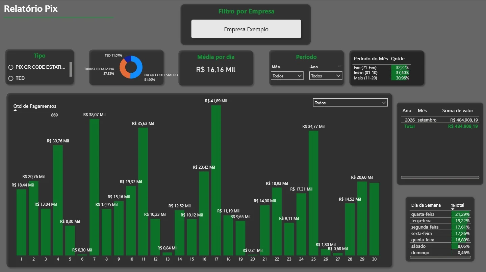

Antes
- Cliente envia o comprovante ao vendedor
- Vendedor repassa ao grupo do caixa e financeiro
- Caixa espera o financeiro confirmar
- Baixa no sistema
De 1 a 3 dias para dar baixa. Sem o extrato, comprovantes falsos passavam.
Depois
- Pagamento cai na conta
- n8n integra as APIs Pix e Extrato
- Aviso no WhatsApp do caixa
- Caixa dá baixa na hora
Baixa em tempo real, com conciliação de 100% via extrato. Cerca de 30 pagamentos por dia, em duas empresas.
Gestão
- Registro no Google Sheets
- Dashboards no Power BI
- Relatório mensal em Python
Visões diária, semanal e mensal. Concentração de faturamento por cliente, enviada por e-mail.
Ponto de partida
Mapeei o processo com vendedores, caixa e financeiro. O cliente enviava o comprovante ao vendedor, que repassava a um grupo com caixa e financeiro. O caixa não podia dar baixa na hora, porque não tinha certeza se o pagamento tinha caído, e o financeiro levava tempo para conferir todos os pagamentos. A baixa no sistema levava de 1 a 3 dias e gerava confusão. Sem o extrato, o caixa dependia do comprovante do cliente, e alguns eram falsos.
O que fiz
Integrei as APIs Pix e Extrato do Bradesco, com autenticação OAuth e mTLS, ao n8n via webhooks e ao WhatsApp. O caixa passou a receber em tempo real os avisos de Pix, TED e transferências entre contas, validados pelo extrato e não pelo comprovante.
Resultado
A baixa de cerca de 30 pagamentos por dia passou de 1 a 3 dias para tempo real, com conciliação automática de 100% dos recebimentos via extrato. O caixa dá baixa no momento do pagamento, sem depender do financeiro, a troca de comprovantes acabou e a validação pelo extrato eliminou o risco de fraude com comprovantes falsos. A solução roda em Docker numa VPS, foi replicada em uma segunda empresa e segue em uso.
Dados para a gestão
Tratei e limpei os dados das movimentações em Python (pandas) e no Power BI (Power Query). Depois, criei dashboards no Power BI, usados por proprietários e gerentes, com visões diária, semanal e mensal. Eles mostram o valor recebido por dia, a média diária, a divisão por tipo de Pix, os dias da semana e as semanas do mês com mais pagamentos, e os 10 maiores pagadores com sua participação no faturamento.
Também escrevi uma análise mensal em Python, com pandas e matplotlib, dos recebimentos e da concentração de faturamento por cliente. O relatório é enviado automaticamente por e-mail. Os recebimentos também ficam registrados em planilhas de acompanhamento no Google Sheets.

Tecnologias
- n8n
- Webhooks
- APIs Bradesco (Pix e Extrato)
- OAuth
- mTLS
- API WhatsApp
- Python (pandas, matplotlib)
- Google Sheets
- Power BI (Power Query)
- Docker
- VPS